Художественный перевод современной военной прозы
Перевод текста с сохранением авторского стиля и эмоциональной нагрузки
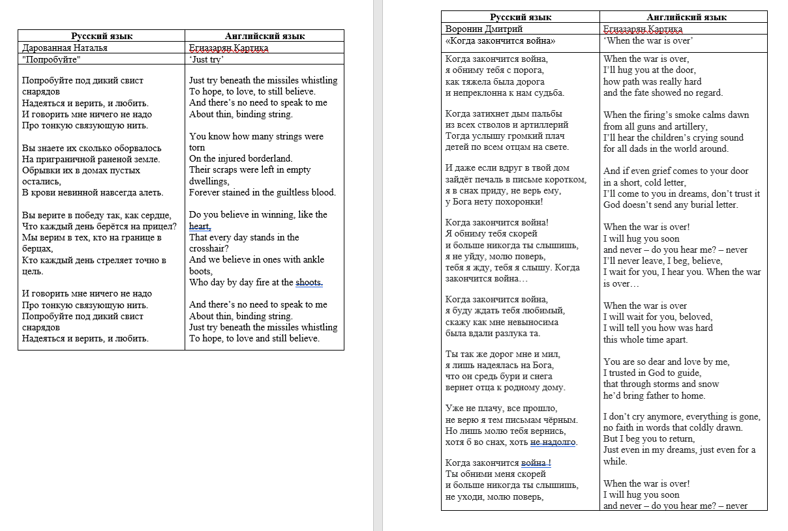
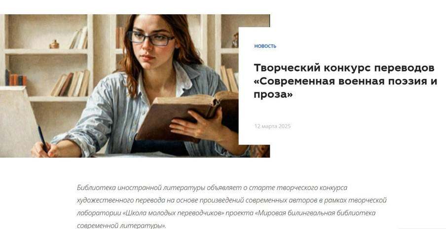
Английский язык
Литературный перевод
Работа с контекстом
Проблема: Перевод современной военной прозы требует сохранения эмоционального напряжения и специфической лексики.
Решение: Подбор эквивалентов для военных терминов, работа с синтаксисом для передачи ритма оригинала.
Ключевые выводы: Научилась работать с эмоционально насыщенными текстами, подбирать контекстуальные эквиваленты.
Интерактивный курс "Гастрономическое путешествие по Испании с Чебурашкой и Геной"
Обучение испанскому через культуру и кулинарию
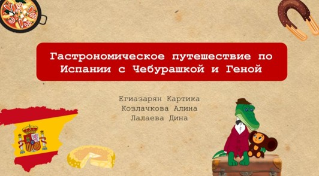
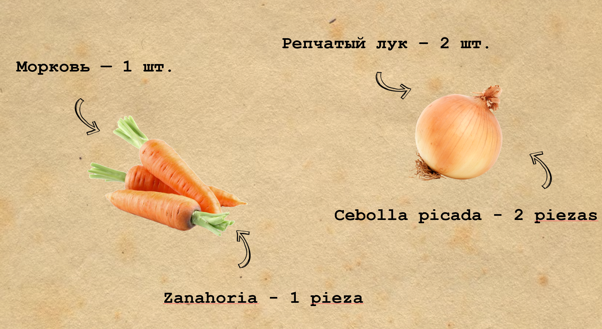
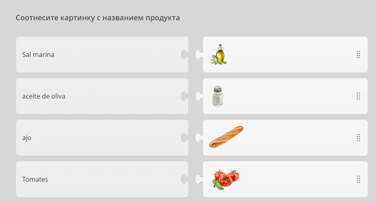
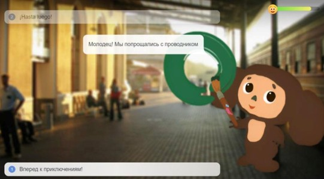
Ispring
Интерактивное обучение
Испанский язык
Дизайн образовательного контента
Проблема: Сложность изучения языка через сухую теорию без культурного контекста.
Решение: Создание интерактивного курса с персонажами Чебурашкой и Геной, которые "путешествуют" по Испании.
Ключевые выводы: Освоила создание образовательного контента, научилась сочетать теорию с практическими заданиями.
Серия визуализированных конспектов по произведениям зарубежной литературы
Структурированный анализ литературных произведений
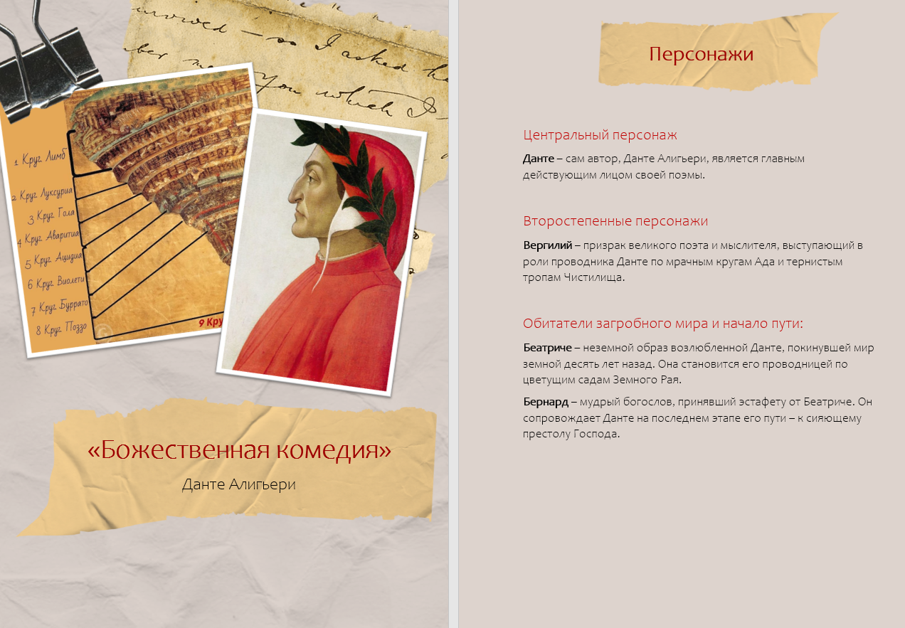
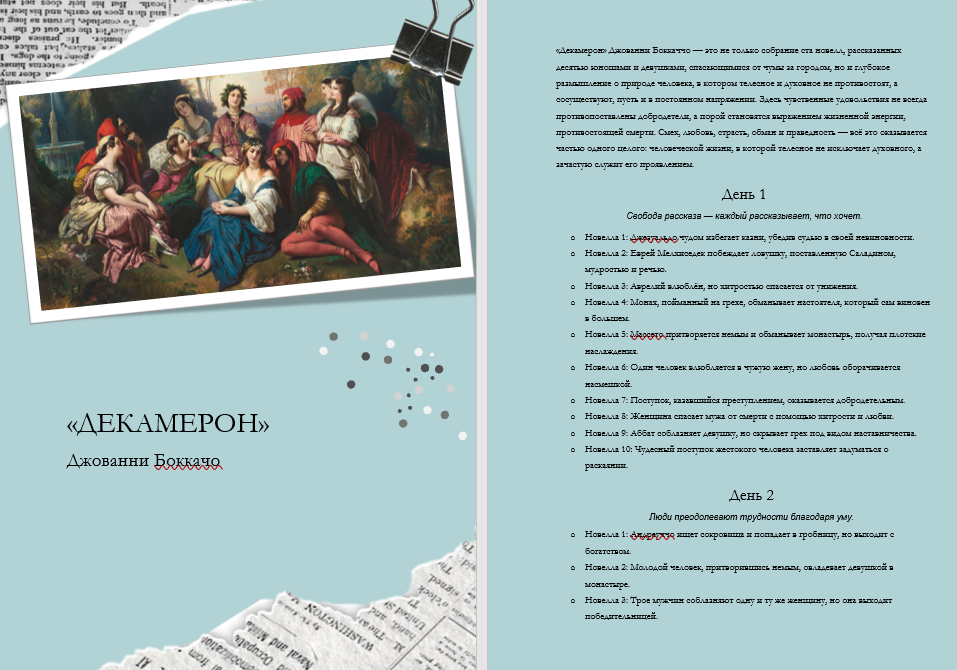
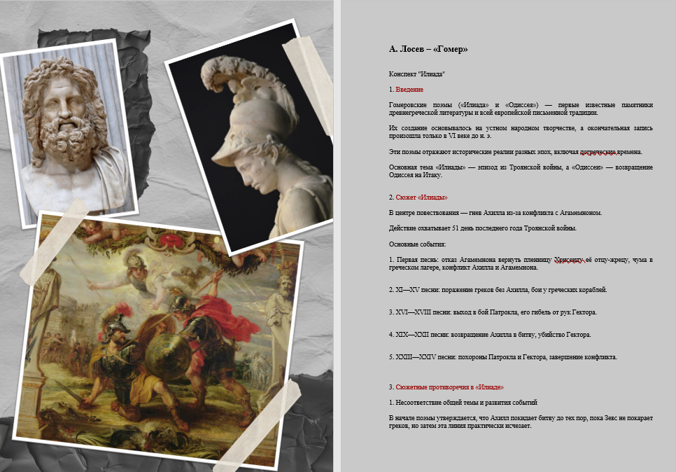
Анализ текста
Структурирование информации
Визуальное оформление
Проблема: Большой объем информации по произведениям трудно запоминать и систематизировать.
Решение: Создание красиво оформленных конспектов с ключевыми темами, персонажами и цитатами.
Ключевые выводы: Разработала систему конспектирования, удобную для запоминания и повторения.
Серия комиксов "Психолингвистические ситуации"
Визуализация языковых явлений через коллажную технику
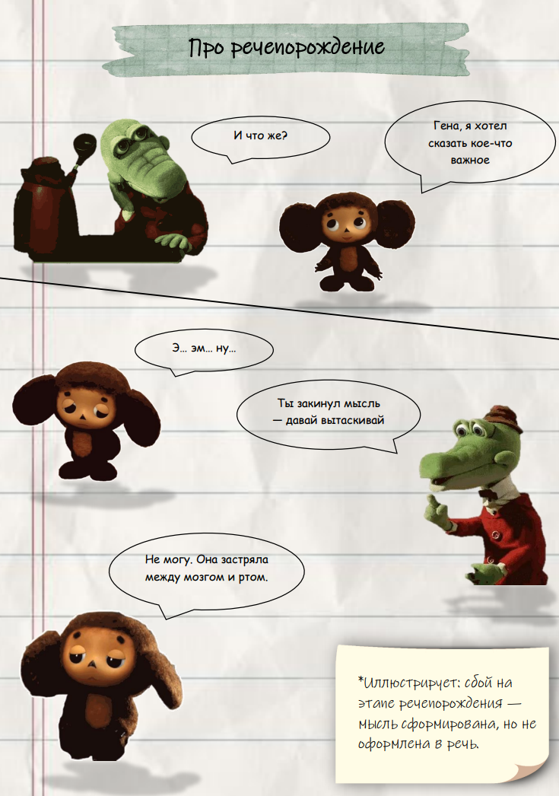

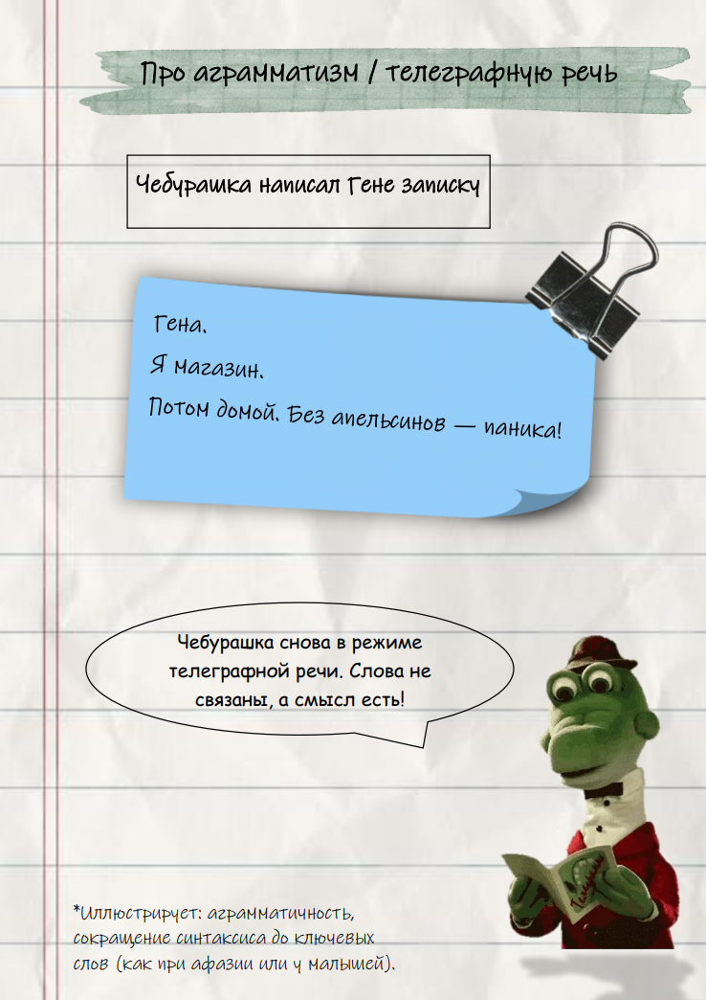
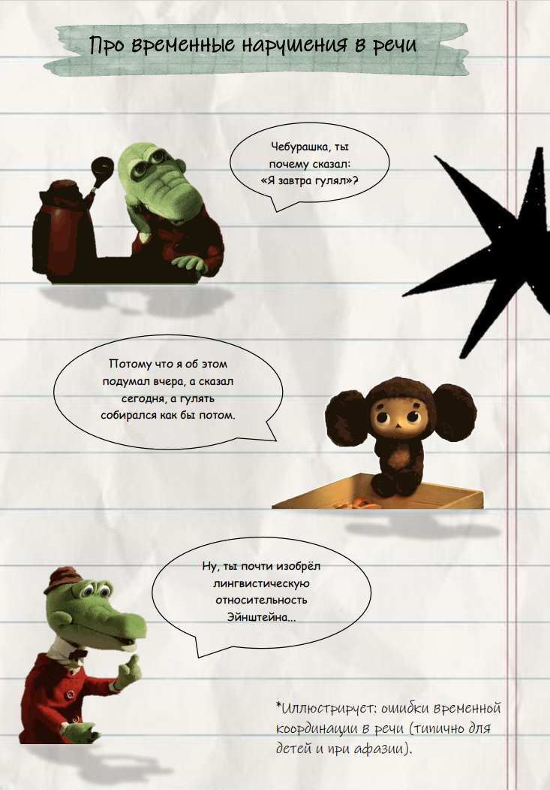
Цифровой коллаж
Adobe Photoshop
Психолингвистика
Визуальная коммуникация
Проблема: Сложные психолингвистические концепции трудно объяснить словами.
Решение: Создание визуальных сценок с персонажами, иллюстрирующих языковые ситуации.
Ключевые выводы: Научилась визуализировать абстрактные концепции, сочетать науку с искусством.
Креативная адаптация классического произведения
Новый взгляд на классику через современные медиа
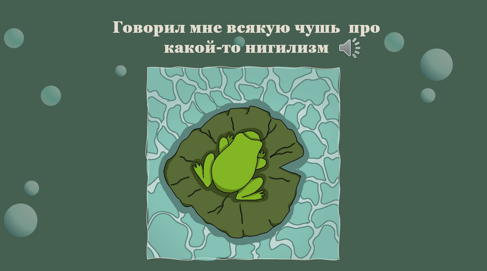
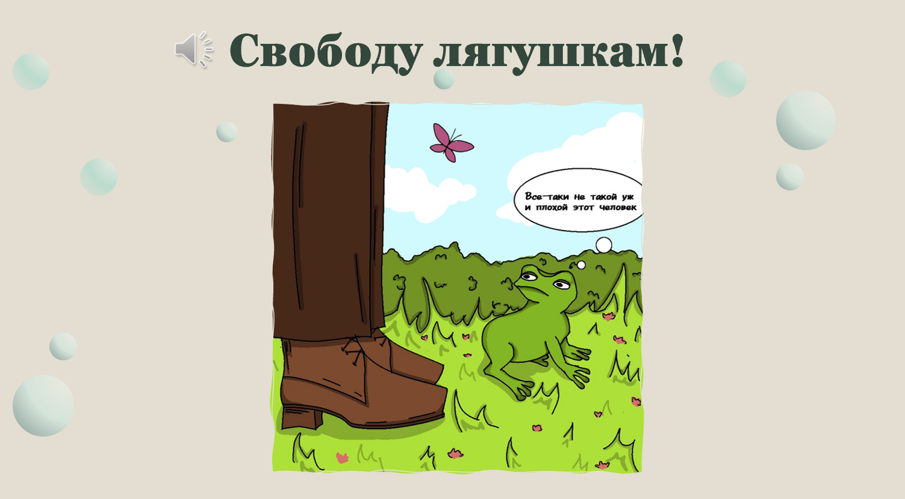
Литературная адаптация
Иллюстрация
Аудиозапись
Презентация
Проблема: Классические произведения могут казаться далекими современному читателю.
Решение: Создание адаптации с необычным ракурсом (от лица второстепенного персонажа) с мультимедийным сопровождением.
Ключевые выводы: Научилась адаптировать классику для современной аудитории, работать с разными медиаформатами.